측량및지형공간정보산업기사 (2003-03-16 기출문제)
1과목: 응용측량
1. 세변이 30m, 40m, 50m인 삼각형의 면적은 얼마인가?
- 1,200m2
- 900m2
- 600m2
- 300m2
(정답률: 알수없음)

2. 1:50,000 지도상의 100cm2의 실제면적은 얼마인가?
- 10km2
- 20km2
- 25km2
- 50km2
(정답률: 알수없음)
3. 축척 1/50,000의 도면상에서 어떤 토지개량 지구의 면적을 구하였더니 45.50㎝2 였다. 실제 면적은 얼마인가?
- 1.375km2
- 11.375km2
- 21.375km2
- 31.375km2
(정답률: 알수없음)
4. 다음식중에서 심프슨의 식(제1법칙)은 어느 것인가?
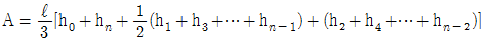
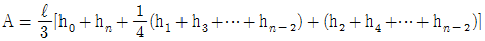
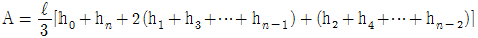
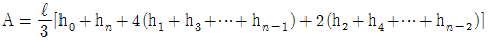
(정답률: 알수없음)
5. 정지 작업을 하기 위하여 측량을 한 결과 다음 그림과 같은 값을 얻었다. 계획고를 0으로 할때 토량은 얼마인가?
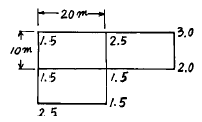
- 750m3
- 725m3
- 1,000m3
- 1,150m3
(정답률: 알수없음)
6. 다음중 완화곡선에 사용되지 않는 것은?
- 2차 포물선
- 3차 포물선
- 렘니스케이트
- 클로소이드
(정답률: 알수없음)
7. 그림과 같은 AC및 BD선 사이에 곡선을 넣으려고 한다. 그러나 교차점에 갈 수 없을 때 ∠ACD=150°, ∠CDB=90°, CD=200m를 측정하여 R=300m로 하면 C점으로부터 곡선시점 까지의 거리는?
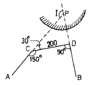
- 288.7m
- 268.7m
- 248.7m
- 228.7m
(정답률: 알수없음)
8. 우리나라의 하천측량 규정에 따르면 하천 수준측량의 오차 허용범위를 4km 거리에서 그 폐합오차가 어느 정도를 초과하지 못하게 되어 있는가?
- 유조부 = 10mm, 무조부 = 15mm, 급류부 = 20mm
- 유조부 = 20mm, 무조부 = 35mm, 급류부 = 40mm
- 유조부 = 3mm, 무조부 = 15mm, 급류부 = 75mm
- 유조부 = 10mm, 무조부 = 20mm, 급류부 = 30mm
(정답률: 알수없음)
9. 하천측량에서 하저(河底)의 구배를 구하는데 있어서 가장 적당한 것은?
- 심천측량에 있어서 가장 깊은 곳을 찾아서 하저를 측정해 나가는 방법
- 하천의 중심에 대하여 하저의 높이를 측정하여 나가는 방법
- 수면의 구배를 측정하고 이것으로 하저의 구배를 측정하는 방법
- 각 횡단면에서 최심부의 위치를 알고 이것으로 하저의 구배를 측정하는 방법
(정답률: 알수없음)
10. 하천의 유속을 구하는 방법중에서 3점법을 사용하여 평균유속을 구하는 공식으로 옳은 것은?
- Vm =
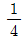
(V2+V6+V8) - Vm =
 (V2+V6+V8)
(V2+V6+V8) - Vm =
 (V2+2V6+V8)
(V2+2V6+V8) - Vm =
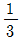
(V2+2V6+V8)
(정답률: 알수없음)
11. A, B 2본의 수갱에 의해서 갱내외를 연결하는 경우, 수갱 깊이를 500m 수갱간의 거리를 400m로 하면 그 양쪽 수갱 간의 거리는 갱내외에서 얼마나 틀리겠는가? (단, 지구의 곡률반지름은 6,370Km이다.)
- 0.8cm
- 1.6cm
- 3.1cm
- 6.2cm
(정답률: 알수없음)
12. 그림에서 A는 광맥의 노두상의 점이고 광맥의 경사는 50° 이다. B는 광맥의 주향선과 60° 의 방향으로 수평거리 300m 떨어진 지점이다. B점의 입갱에서 광상까지의 깊이를 구하면? (단, 표고의 단위는 m 임.)
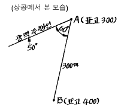
- 259.81m
- 309.63m
- 409.63m
- 498.⑤m
(정답률: 알수없음)
13. 깊이 100m, 직경 5m인 1개의 수직터널에 의해서 터널내외를 연결하는데는 어느 방법이 가장 많이 사용되는가?
- 사변형법
- 트랜싯과 추선에 의한 방법
- 삼각법
- 지거법
(정답률: 알수없음)
14. 다음 그림에서 BC선에 연하여 심천 측량을 하기위해 A점을 CB선에 직각으로 AB = 96m를 잡았다. 지금이 배의 위치에서 육분의로 ∠APB를 측정하여 48° 20'을 얻었다. 이때 BP의 거리는 얼마인가?
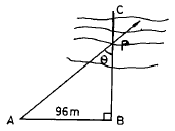
- 85.43m
- 86.43m
- 87.43m
- 88.43m
(정답률: 알수없음)
15. 곡선의 종류중 반경이 같지 않은 2개의 단곡선이 그 접속점에서 공통접선을 갖고 곡선의 중심이 공통접선의 반대쪽에 있을 때 이러한 곡선을 무엇이라 하는가?
- 복심곡선
- 완화곡선
- 2차포물선
- 반향곡선
(정답률: 알수없음)
16. 트래버스측량을 실시하여 얻은 좌표가 A점(100,200), B점(-200,-200)일 때 AB의 방위각은?
- 53° 07′ 48″
- 233° 07′ 48″
- 36° 52′ 12″
- 216° 52′ 12″
(정답률: 알수없음)
17. 경관도의 정량적 해석시 시설물이 경관의 주제가 되고 쾌적한 경관으로 인식되는 수직 시각의 범위는?
- 10° ＜ θV ≤ 30°
- 60° ＜ θV
- 0° ＜ θV ≤ 15°
- 0° ≤ θV ≤ 20°
(정답률: 알수없음)
18. 그림과 같이 AD, DB간에 단곡선을 설치함에 있어 ∠ADB의 2등분선상의 C점을 곡선의 중점에 설치하도록 한다. 기점(No. 0)으로부터 D(I.P)까지의 거리를 380.4m라 하면 기점(No.0)으로부터 시점(B.C)과 종점(E.C)까지의 거리는 각각 얼마인가? (단, 곡선의 반경 R은 32.4m 이다.)
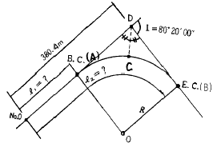
- 353.1m, 398.5m
- 335.0m, 362.3m
- 335.0m, 407.7m
- 353.1m, 425.8m
(정답률: 알수없음)
19. 배횡거법으로 다각형의 면적을 계산하고자 한다. 다각형을 형성하는 하나의 임의 측선에 의해 이루어지는 면적을 계산하고자 할 때 필요치 않은 것은?
- 전 측선의 배횡거
- 그 측선의 경거
- 그 측선의 위거
- 전 측선의 위거
(정답률: 알수없음)
20. 다음 중 경관분석을 위한 기초인자가 아닌 것은?
- 주변의 생태특성
- 인간의 시각특성
- 대상의 시간속성
- 시점과 대상과의 관계
(정답률: 알수없음)
2과목: 사진측량 및 원격탐사
21. 화면거리 15cm의 사진에서 축척이 1/30,000 이었다. 사진의 주점으로부터 산의 정상까지의 거리가 60mm이고, 비고가 300m일 때 비고에 의한 편위는 얼마인가?
- 1mm
- 2mm
- 3mm
- 4mm
(정답률: 알수없음)
22. 초점거리 25cm인 카메라로 촬영한 사진의 밀착인화를 명시거리에서 실체시하면 토지의 기복상태는?
- 고저를 모른다.
- 과고하게 보인다.
- 대체로 바른모양으로 보인다.
- 비고감이 작게 보인다.
(정답률: 알수없음)
23. 항공사진 촬영에 있어서 종중복도는 대체로 몇 %로 하는 가?
- 30%
- 40%
- 50%
- 60%
(정답률: 알수없음)
24. 평탄한 지형을 경사로 찍은 사진으로 모자이크 하기 위해 필요한 작업은?
- 세부도화
- 시차측정
- 정사투영 작업
- 편위수정
(정답률: 알수없음)
25. 다음중에서 사진해석을 올바르게 설명한 것은?
- 천연색 사진으로만 할 수 있다.
- 도화기에 의해서만 가능하다.
- 한장의 사진만으로 판독한다.
- 실체시 되는 한쌍의 사진으로 판독한다.
(정답률: 알수없음)
26. 주점거리 153㎜인 항공사진기로 촬영경사 4grade로 평지를 촬영하였다. 사진의 등각점은 주점보다 최대 경사선으로 부터 몇 ㎜인 곳에 있는가?
- 9.6mm
- 7.4mm
- 4.8mm
- 3.2mm
(정답률: 알수없음)
27. 비행고도가 일정할 때 보통각, 광각, 초광각 등 세가지 카메라로서 사진을 찍었을 때에 사진축척이 가장 대축적인 것은 어느 것인가?
- 보통각 사진
- 광각 사진
- 초광각 사진
- 고도가 같으므로 일정하다.
(정답률: 알수없음)
28. 다음 위성 중 센서의 해상도가 가장 높은 것은 어느 것인가?
- MOSS
- SPOT
- IKONOS
- LANDSAT
(정답률: 알수없음)
29. 항공사진 현상처리 순서로서 다음 중 가장 알맞는 것은 어느 것인가?
- 현상 - 정착 - 수세 - 건조
- 현상 - 수세 - 정착 - 건조
- 건조 - 현상 - 정착 - 수세
- 현상 - 건조 - 정착 - 수세
(정답률: 알수없음)
30. 사진의 크기가 23cm×23cm이고 두 사진의 주점기선의 길이는 10cm이었다. 이 때의 종중복도는 얼마인가?
- 43%
- 57%
- 64%
- 78%
(정답률: 알수없음)
31. 사진측량에서 사진의 왜곡수차를 보정하는 방법이 아닌것은?
- 화면거리를 변화시키는 방법
- 포로-코페(Porro-Koppe)의 방법
- 사선변환(projection transformation)의 방법
- 보정판을 사용하는 방법
(정답률: 알수없음)
32. 화면의 크기 23cm×23cm의 항공사진의 사진축척이 1/18,000이다. 이 화면에 포괄되는 실제면적은 얼마인가?
- 8.6km2
- 11.5km2
- 17.1km2
- 20.7km2
(정답률: 알수없음)
33. 수직 항공사진 측량의 공정을 바르게 설명한 것은 어느것인가
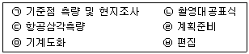
- ㉣ → ㉠ → ㉢ → ㉡ → ㉤ → ㉥
- ㉣ → ㉢ → ㉠ → ㉡ → ㉤ → ㉥
- ㉣ → ㉠ → ㉡ → ㉢ → ㉤ → ㉥
- ㉣ → ㉡ → ㉠ → ㉢ → ㉤ → ㉥
(정답률: 알수없음)
34. 항공삼각 측량의 출발 모델에 절대 표정의 기준점 수는 얼마 정도가 필요한가?
- 3
- 5
- 7
- 10
(정답률: 알수없음)
35. 시속 720km/h, 고도 4,000m, 렌즈의 초점거리 20cm, 허용 흔들림이 0.01mm일 때 최장노출시간(초)은?
- 1/100초
- 1/500초
- 1/1,000초
- 1/1,500초
(정답률: 알수없음)
36. 사진상에 찍혀있는 삼각점 A, B가 있어 이 두점간을 사진상에서 거리를 측정하였더니 8.4cm이고, 축척 1/25,000의 지도상에서는 3.6cm였다. 촬영고도는 얼마인가? (단, 카메라의 화면거리는 15cm, 화면크기는 23cm×23cm이다.)
- 약 1,400m
- 약 1,500m
- 약 1,600m
- 약 1,700m
(정답률: 알수없음)
37. 사진측량 정확도에 관한 내용으로 옳은 것은?
- 사진 1매에서의 축척은 다를 수 있으므로 정확도가 균일하지 못하다.
- 종래의 측량방법과 달리 상대오차가 불량하다.
- 표고에 대한 정확도는 촬영축척분모수의 0.1∼0.2m이다.
- 수평위치에 대한 정확도는 촬영축척분모수의 10∼30μ 이다.
(정답률: 알수없음)
38. 원격탐측의 센서에 대한 설명으로 옳지 않은 것은?
- 선주사 방식에는 Vidicon(TV)방식이 있다.
- 화상센서와 비화상센서가 있다.
- 수동적 센서에는 선주사 방식과 카메라 방식이 있다.
- 능동적 센서에는 Radar방식과 Laser방식이 있다.
(정답률: 알수없음)
39. 축척 1/10,000인 평지를 촬영한 연직사진이 있다. 이 화면의 크기는 18cm×18cm, 종중복도 60%라고 할 때 지상의 촬영기선장은?
- 920m
- 860m
- 720m
- 640m
(정답률: 알수없음)
40. 항공사진 촬영시 카메라의 경사한계는?
- 0°
- 3°
- 5°
- 10°
(정답률: 알수없음)
3과목: GIS 및 GPS
41. 삼각측량의 목적은 무엇인가?
- 측점간의 거리가 멀어서 직접 측정이 곤란할 때 거리를 측정하기 위하여
- 삼각형으로 나누어 면적을 구하기 위하여
- 모든 측량의 골격이 되는 기준점의 위치를 정하기 위하여
- 복잡한 지형의 높이를 측정하기 위하여
(정답률: 알수없음)
42. 다음 중 자료입력 방법이 아닌 것은?
- 수동방식(디지타이저)에 의한 입력
- 자동방식(스캐너)에 의한 입력
- 항공사진에 의한 해석도화 입력
- 잉크젯 프린터에 의한 도면제작
(정답률: 알수없음)
43. 다음 지형 공간정보체계의 활용에 대한 설명 중 틀리는 것은?
- 토지정보체계는 교통과 관련된 문제를 해결하기 위한 정보체계이다.
- 환경정보체계는 대기오염정보,수질오염정보, 폐기물 처리정보와 관련된 정보체계이다.
- 지리정보체계는 공간좌표 또는 지리좌표에 관련된 도형 및 속성자료를 효율적으로 수집, 저장, 갱신, 분석하기 위한 정보체계이다.
- 도시정보체계는 도시계획 및 도시화 현상에서 발생하는 인구, 자원 및 교통의 관리, 건물면적, 지명, 환경변화 등에 관한 정보를 다루는 체계이다.
(정답률: 알수없음)
44. 1눈금이 2mm 이고 감도가 30" 인 레벨로서 거리 100m지점의 표척을 읽었더니 1.633m였다. 그런데 표척을 읽을 때 기포가 2눈금 뒤로 가 있었다. 올바른 표척의 독치는? (단, 표척은 연직으로 세웠음)
- 1.604m
- 1.662m
- 1.923m
- 1.544m
(정답률: 알수없음)
45. ± (5mm+2ppm)인 광파측거기로 5km를 측정할 때의 거리 오차는?
- ± 7mm
- ± 11mm
- ± 15mm
- ± 35mm
(정답률: 알수없음)
46. 수평면상의 A점과 B점간의 거리가 20㎞라 하면, A점에서 B점을 시준할 수 있는 측표높이는 최소 얼마 이상인가? (단, 지구의 반경은 6,370㎞이며, 광선의 굴절은 무시함)
- 3.14m
- 31.40m
- 1.57m
- 15.70m
(정답률: 알수없음)
47. 두점의 거리 관측에서 A는 4회 관측치의 평균이 120.58m이고, B는 2회 관측평균이 120.51m, C는 7회 관측의 평균이 120.61m였다면 이 거리의 최확치는?
- 120.568m
- 120.672m
- 120.543m
- 120.585m
(정답률: 알수없음)
48. 트래버어스 측량에서는 측거의 정밀도와 측각의 정밀도가 균형이 잡히는 것이 좋다고 한다. 지금 측거의 허용오차를 1/5,000로 할 때 측각에 허용되는 오차는 어느 정도인가?
- 25"
- 30"
- 38"
- 41"
(정답률: 알수없음)
49. 1/10,000지형도상에서 균일 사면상에 40m와 50m등고선 사이의 P점의 표고는? (단, P점에서 40m와 50m 등고선까지의 최단거리는 각각 도상에서 5mm, 15mm였다.)
- 42.5m
- 43.5m
- 45.5m
- 47.5m
(정답률: 알수없음)
50. 시가지의 다각측량에서 정도(폐비)가 1/10,000을 얻으려고 할 때 어떤 기구를 사용하여 최소 독치를 어디까지 읽은 것이 좋은가?
- 스틸테이프로 1mm 까지 읽고 장력, 온도, 처짐, 보정을 실시한다.
- 스틸테이프로 1mm 까지 읽고 각은 20"까지 읽는다.
- 스틸테이프로 1cm 까지 읽고 각은 1"까지 읽는다.
- 헝겊테이프로 1cm 까지 읽고 각은 20"까지 읽는다.
(정답률: 42%)
51. 기포가 중앙에 있을 때 50m 떨어진 표척을 읽어 1.315m를 얻고, 다시 기포가 3눈금 움직였을 때 같은 표척을 읽어 1.345m를 얻었다. 레벨의 기포관 감도는 대략 얼마인가?
- 20″
- 30″
- 40″
- 50″
(정답률: 알수없음)
52. 다음 하천의 AB 폭은? (단, BC = 40m, BD = 20m, ∠ACD=∠ABC = 90° 임)
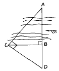
- 60m
- 80m
- 100m
- 120m
(정답률: 알수없음)
53. 다음 벡터식 자료구조중 선사상이 아닌 것은?
- 점(Point)
- 아크(Arc)
- 체인(Chain)
- 스트링(String)
(정답률: 알수없음)
54. 트랜싯을 보정할 때 고려해야 할 사항이 아닌 것은?
- 수준기축이 연직축에 수직이 되어야 한다.
- 수평축과 연직축은 평행이 되어야 한다.
- 시준선이 수평할 때 망원경 수준기의 기포가 중앙에 위치해야 한다.
- 시준선이 수평하고, 망원경 수준기의 기포가 중앙에 있을 때 연직분도원의 유표가 0으로 표시되어야 한다.
(정답률: 알수없음)
55. 거리 100m에 대한 스타디아측량 결과 연직각이 15° 였다. 이때 시거선의 읽기오차가 0.7㎝였다면, 이로 인한 거리의 측정오차는? (단, K=100, C=0)
- 55.3㎝
- 65.3㎝
- 75.3㎝
- 85.3㎝
(정답률: 알수없음)
56. 수치지형모형에 대한 설명 중 옳지 않은 것은?
- 수치화된 지형도의 자료원, 사진측량 및 원격탐측을 이용하여 수치지형모형의 자료를 취득할 수 있다.
- 수치지형모형은 지구 표면의 일부를 수치적으로 표현한 것이라고 할 수 있다.
- 수치지형모형은 대부분 사각형 격자 또는 불규칙삼각망의 자료구축방법을 따르고 있다.
- 수치지형모형의 보간방법을 선택하는 가장 중요한 기준은 자료점들의 정확도와 분포상황이다.
(정답률: 알수없음)
57. 평판측량에서 각 측정과 거리 측량의 정도는 균형을 이루는 것이 좋다. 거리측정의 오차가 200m 에 대하여 ± 5mm이면 이 수준에 맞는 측각오차는?
- ± 5″
- ± 10″
- ± 15″
- ± 20″
(정답률: 알수없음)
58. 지형공간정보체계와 관련된 중요기법이 아닌 것은?
- 도면 자동화
- 시설물 관리
- CAD
- SI
(정답률: 알수없음)
59. 삼각점간의 평균거리가 약 5㎞의 삼각측량을 하였을 때 관측한 수평각의 평균을 0.3″ 까지 구한다면 관측점 및 시준점의 편심을 고려치 않아도 좋은 한도는?
- 0.42㎝
- 0.52㎝
- 0.62㎝
- 0.72㎝
(정답률: 알수없음)
60. 다음 중 격자구조가 벡터구조에 비해 갖는 단점이 아닌것은?
- 위성정보 제공이 불가능하다.
- 자료구조가 복잡하다.
- 시각적인 효과가 떨어진다.
- 좌표변환에 시간이 많이 소요된다.
(정답률: 알수없음)
4과목: 측량학
61. 다음 중 임시 설치표지는?
- 삼각점표석(三角点標石)
- 표기(標旗)
- 측표(測標)
- 자기점표석(磁氣点標石)
(정답률: 알수없음)
62. 다음 중 국립지리원장이 간행하는 지도의 축척이 아닌 것은?
- 1 : 1,000
- 1 : 3,000
- 1 : 5,000
- 1 : 10,000
(정답률: 알수없음)
63. 우리나라의 측량의 기준을 기술한 다음 사항 중 적당치 않은 것은?
- 위치는 필요한 경우에는 직각좌표 및 평균해면으로부터의 높이로 표시할 수 있다.
- 측량의 원점은 세계측지계에 의한다.
- 거리 및 면적은 회전타원체면상의 값으로 표시한다.
- 위치는 지리학적 경위도와 평균해면으로부터의 높이로 표시한다.
(정답률: 알수없음)
64. 지도도식 규칙의 제정목적이 아닌 것은?
- 지형· 지물 및 지명등을 나타내는 기호나 문자 등의 표시방법의 통일
- 지도의 축척을 결정
- 지도의 정확하고 쉬운 판독에 기여
- 지도의 도식에 관한 기준을 정함
(정답률: 알수없음)
65. 공공측량으로 지정할 수 있는 일반측량의 내용중 옳지 않은 것은?
- 측량노선의 길이가 5㎞ 이상인 수준측량
- 측량노선의 길이가 10㎞ 이상인 다각측량
- 측량실시 지역의 면적이 1㎞2 이상인 삼각측량
- 국립지리원장이 발행하는 지도의 축척과 동일한 축척의 지도제작
(정답률: 알수없음)
66. 건설교통부장관의 허가를 받지 아니하고 기본측량의 성과 중 지도, 연안해역기본도, 측량용 사진을 국외로 반출한 자에 대한 벌칙은?
- 2년 이하의 징역 또는 500만원 이하의 벌금
- 6월 이하의 징역 또는 200만원 이하의 벌금
- 1년 이하의 징역 또는 300만원 이하의 벌금
- 200만원 이하의 과태료
(정답률: 알수없음)
67. 다음 설명 중 측량법의 제정 목적에 해당되지 않는 것은?
- 측량에 관한 기준을 정하는데 있다.
- 측량제도의 발전을 도모하는데 있다.
- 측량업무의 규제와 경비절감에 있다.
- 모든측량의 정확도 확보에 있다.
(정답률: 알수없음)
68. 공공측량에 관한 설명 중 옳지 않은 것은?
- 공공측량은 국립지리원장의 승인을 받은 작업규정에 의하여 실시하여야 한다.
- 공공측량 계획기관은 공공측량의 측량성과를 일반인에게 열람시켜야 한다.
- 공공측량의 측량성과를 공공측량 계획기관이 고시한다.
- 공공측량의 작업기관은 관계 행정기관에 대하여 공공측량에 관하여 필요한 자료의 제출을 요구할 수 있다
(정답률: 알수없음)
69. 기본측량에 관한 다음 설명 중 옳은 것은?
- 측량을 위해서 부득이한 사유라도 타인의 건물이나 토지에 출입할 때에는 반드시 통지를 하여야 한다.
- 측량실시를 위해 필요하다고 인정할 시에는 장애물을 임의로 제거할 수 있다.
- 국립지리원장은 측량으로 인한 손해를 입은자가 있을 경우 대통령령에 의해 손실보상을 해야 한다.
- 건설교통부장관은 기본측량에 관한 장기계획을 수립하고 국립지리원장은 중장기 계획을 수립한다.
(정답률: 알수없음)
70. 측량업 등록의 결격 사유에 해당되는 것은?
- 한정치산의 선고를 받은 자
- 형의 선고를 받고 그 집행이 종료되고 3년이 경과한자
- 측량업의 등록을 취소 당한 날로 부터 2년이 경과한자
- 파산선고를 받고 복권된 자
(정답률: 알수없음)
71. 다음 중 기본측량을 위하여 설치된 측량표를 감시할 의무를 가진 사람은?
- 구청장
- 도지사
- 건설교통부장관
- 국립지리원장
(정답률: 알수없음)
72. 중앙지명위원회의 구성에 대한 설명으로 틀린 것은?
- 위원장은 국립지리원장이 된다.
- 국립지리원에 중앙지명위원회를 둔다.
- 위원장 및 부위원장 각 1인을 포함한 20인 이내의 위원으로 구성한다.
- 부위원장은 국립지리원 지도과장이 된다.
(정답률: 알수없음)
73. 과태료 처분에 대한 설명으로 틀린 것은?
- 정당한 사유없이 측량의 실시를 방해한 자는 과태료처분 대상이 된다.
- 국립지리원장은 과태료를 부과· 징수한다.
- 과태료처분에 불복이 있는 자는 그 처분이 있음을 안날로부터 60일 이내에 이의를 제기할 수 있다.
- 과태료 처분에 대한 이의를 제기한 때에 관할법원은 비송사건절차법에 의한 과태료의 재판을 한다.
(정답률: 알수없음)
74. 국립지리원에서 발행하고 있는 1 : 50,000 국가지형도의 직각좌표 투영방법은 다음 중 어느 것으로 표시하고 있는 가?
- 방위투영법
- 횡단 머케이터(TM) 투영법
- 원추투영법
- 국제 횡단 머케이터(UTM) 투영법
(정답률: 알수없음)
75. 수치지도의 판매가격을 정하는 경우에 대한 설명으로 틀린 것은?
- 도엽당 판매가격을 정할 것
- 계층구조별로 판매가격을 정할 것
- 수치지도의 복사에 필요한 재료비등 가공비용이 포함되도록 할 것
- 지도등의 판매가격은 행정자치부장관이 정한다.
(정답률: 알수없음)
76. 지도의 내도곽에 표시되는 것으로 옳은 것은?
- 도엽명, 도엽번호
- 인쇄연도 및 축척
- 발행자 및 편집연도
- 지물 및 지형
(정답률: 알수없음)
77. 측량업의 등록을 취소시킬 수 있는 사항이 아닌 경우는?
- 다른 사람에게 자기의 등록수첩을 대여한 때
- 정당한 사유없이 등록을 한 날로부터 6개월 이내에 영업을 개시하지 아니한 때
- 다른 사람에게 자기의 등록증을 대여한 때
- 허위 기타 부정한 방법으로 등록을 한 때
(정답률: 알수없음)
78. 측량심의회의 위원장은 누구인가?
- 국립지리원장
- 건설교통부장관
- 건설교통부차관
- 대한측량협회장
(정답률: 알수없음)
79. 지형 지물의 변동사항 보고에 대한 설명으로 옳은 것은?
- 서울특별시장 광역시장 또는 도지사가 매년 2월말까지 보고하며 건설교통부장관이 접수한다.
- 시장· 군수 또는 구청장이 매년 2월말 까지 보고하며 국립지리원장이 접수한다.
- 서울특별시장 광역시장 또는 도지사가 변동사항 발생 즉시 보고하며 건설교통부장관이 접수한다.
- 시장· 군수 또는 구청장이 변동사항 발생 즉시 보고하며 국립지리원장이 접수한다.
(정답률: 알수없음)
80. 측량성과를 고의로 사실과 다르게 한 자의 벌칙은?
- 2년이하의 징역 또는 500만원 이하의 벌금에 처한다.
- 1년이하의 징역 또는 300만원 이하의 벌금에 처한다.
- 200만원 이하의 벌금에 처한다.
- 200만원 이하의 과태료에 처한다.
(정답률: 알수없음)